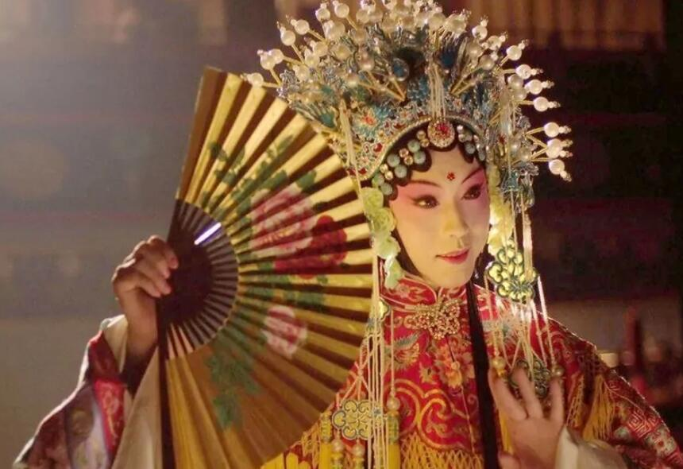

京剧

京剧，又称平剧、京戏等，是中国影响最大的戏曲剧种，分布地以北京为中心，遍及全国各地。
清代乾隆五十五年（1790年）起，原在南方演出的三庆、四喜、春台、和春 四大徽班陆续进入北京，与来自湖北的汉调艺人合作，同时接受了昆曲、秦腔的部分剧目、曲调和表演方法，又吸收了一些地方民间曲调，通过不断的交流、融合，最终形成京剧。
京剧在文学、表演、音乐、舞台美术等各个方面都有一套规范化的艺术表现形式。京剧的唱腔属板式变化体，以二簧、西皮为主要声腔。京剧伴奏分文场和武场两大类，文场以胡琴为主奏乐器，武场以鼓板为主。京剧的角色分为生、旦、净、丑、杂、武、流等行当，后三行已不再立专行。各行当都有一套表演程式，唱念做打的技艺各具特色。京剧以历史故事为主要演出内容，传统剧目约有一千三百多个，常演的在三四百个以上。
京剧流播全国，影响甚广，有“国剧”之称。以梅兰芳命名的京剧表演体系被视为东方戏剧表演体系的代表，为世界三大表演体系之一。京剧是中华民族传统文化的重要表现形式，其中的多种艺术元素被用作中国传统文化的象征符号。
2006年5月，京剧被国务院批准列入第一批国家级非物质文化遗产名录。 [2] 2010年，被列入联合国教科文组织非物质文化遗产名录 （名册）人类非物质文化遗产代表作名录